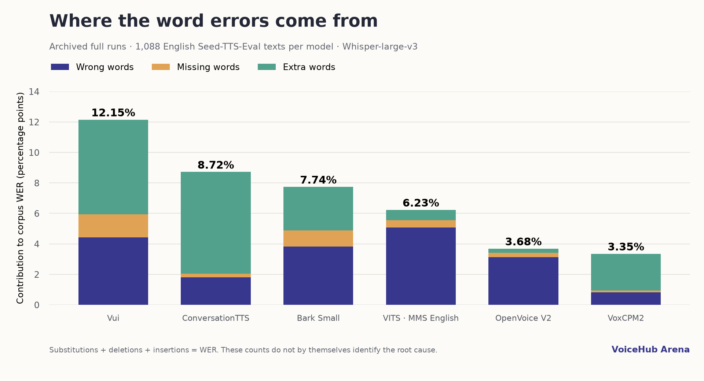

Which errors dominate?
Download SVG ↓{kind=link}

132 diagnostic records scored and verified; 96 newly generated recordings. All 35,904 original records were checked. IDs, target texts and every published WER/CER calculation matched. We then examined six additional models above 3% WER and verified all 6,528 source WAVs.
| Model | Full archived WER | Wrong words | Missing words | Extra words | Finding |
|---|---|---|---|---|---|
| Vui Abraham 100M | 12.15% | 528 | 182 | 741 | Short-text and minimum-duration sensitivity; residual quality failures. |
| ConversationTTS · ckpt1 | 8.72% | 216 | 29 | 796 | Confirmed duration-budget bug repaired; strong speaker sensitivity. |
| Bark Small | 7.74% | 456 | 128 | 340 | Independent waveforms match exactly; ASR amplifies some failures. |
| VITS · MMS English | 6.23% | 606 | 58 | 80 | No precision-related WER improvement; independent implementation matched. |
| OpenVoice V2 | 3.68% | 372 | 35 | 33 | Conversion stage degrades intelligibility; publisher source embedding partly helps. |
| VoxCPM2 | 3.35% | 99 | 14 | 287 | Tail continuation/repetition; higher CFG did not consistently help. |

This is Vui Abraham 100M (vui-abraham-100m.pt), not a newer Vui checkpoint. Across the full corpus, texts below 40 characters have 43.49% WER versus 6.67% at 80–119 characters. The native and pinned publisher source both suppress EOS for roughly four seconds. In six deliberately difficult cases, lowering this floor to one second reduced diagnostic WER from 80.52% to 58.44% by reducing inserted words from 22 to 5; substitutions and deletions did not improve. The original baseline reproduced its archived score. This is evidence of an unsuitable stopping constraint for some short texts, not proof that the remaining failures are fixed. The one-second change was an in-memory experiment, not a deployed default.
The actual model is AudioFoundation/SpeechFoundation ckpt1. Its generator budgeted 40 ms per audio frame, while the actual Mimi codec produced 80 ms per frame (20 frames decoded to 38,400 samples at 24 kHz). This allowed a requested duration to be exceeded by up to two times. The generator now derives its budget from the codec frame rate, and wrapper validation uses 80 ms. Three non-terminating-model regression cases failed before and passed after the repair. Only two archived full-corpus recordings exceeded 30 seconds, so this bug alone cannot explain the full 8.72% WER. Separately, changing only speaker=0 to speaker=1 reduced WER on the six selected cases from 172.22% to 6.94%, and extra words from 119 to 1. A 41.12-second failure became 3.28 seconds. This is a promising configuration finding, not a corrected full-split score or proof that speaker 0 is invalid. The publisher describes training labels [1] and [2], while the upstream API defaults to 0. Both diagnostic variants were generated before the duration patch; all original recordings remain unchanged.
The archived model is Bark Small, suno/bark-small, without a fixed voice/history preset. All six independent Transformers FP32 outputs were sample-for-sample identical to the native regenerated waveforms, and native baselines matched the archived waveforms. The same diagnostic WER of 122.37% is therefore not explained by a discrepancy between these tested implementations. Turning VAD on for the same archived audio reduced selected-case WER to 48.68%; one four-word target triggered a long repeated Whisper transcript. Other cases still continued beyond the target. Recognition amplification contributes to extreme scores, while remaining synthesis/conditioning failures are unresolved. No silent VAD change or preset substitution was made to the full benchmark.
The checkpoint is facebook/mms-tts-eng. Native and Transformers tokenizers matched on all 1,088 texts. On six selected CPU FP32 cases, independent waveforms had identical lengths and near-unit correlation; the largest absolute sample difference was 2.95043e-5. Their diagnostic WER and CER also matched. On CUDA, the original native dtype was FP16: regenerating in FP32 left diagnostic WER unchanged at 22.97%. CPU and CUDA use different random-number streams, so the CPU/CUDA score difference is not a precision comparison. These checks do not support an FP16 failure or a material native-port discrepancy in the tested path. Errors such as names and word pronunciations remain; the six cases cannot rule out every possible defect.
This is OpenVoice V2 with the Melo English base, default EN-US speaker (id 0), and the fixed Emily target reference. We saved the exact Melo waveform entering each conversion. Across the six selected cases, Melo alone had 2.67% WER, compared with 26.67% after conversion. The converted waveform exactly reproduced the archived output. The native default estimates a source speaker embedding separately from each short generated clip, whereas the publisher V2 example uses a released embedding for the known Melo speaker. Substituting only the released en-us.pth source embedding reduced diagnostic WER to 14.67%. One selected failure improved substantially, but two others remained poor. This establishes conversion/conditioning sensitivity and a partial workflow difference, not a complete fix or independent numerical converter-parity proof. The target reference and its processing remain possible factors.
The archived checkpoint is VoxCPM2, using BF16 and CFG=2. Insertions account for 287 of 400 word edits in the full corpus. The three highest-edit cases initially transcribe the complete target, then add unrelated or repeated text; VAD did not eliminate these failures. Increasing CFG from 2 to 3 reduced some tails and raised exact matches from three to four of the six cases, but a severe repeated-transcription failure increased their combined diagnostic WER from 39.76% to 134.94%. Therefore CFG=3 is not a validated fix and was not adopted. Generation termination and recognition amplification remain under investigation; this sensitivity test is not independent publisher-parity validation.
Three highest-edit-count cases, first two records and longest text per model. Seed 42, pinned Whisper-large-v3, English, FP16, no VAD. These percentages describe selected difficult cases only.
| Model | Variant | Records | Diagnostic WER | Diagnostic CER |
|---|---|---|---|---|
| Vui Abraham 100M | archived | 6 | 80.52% | 57.51% |
| Vui Abraham 100M | baseline | 6 | 80.52% | 57.51% |
| Vui Abraham 100M | minimum_1_second | 6 | 58.44% | 43.43% |
| ConversationTTS · ckpt1 | archived | 6 | 172.22% | 147.70% |
| ConversationTTS · ckpt1 | baseline | 6 | 172.22% | 147.70% |
| ConversationTTS · ckpt1 | speaker_1 | 6 | 6.94% | 3.57% |
| Bark Small | archived | 6 | 122.37% | 92.36% |
| Bark Small | baseline | 6 | 122.37% | 92.36% |
| Bark Small | transformers | 6 | 122.37% | 92.36% |
| VITS · MMS English | archived | 6 | 22.97% | 9.73% |
| VITS · MMS English | baseline | 6 | 22.97% | 9.73% |
| VITS · MMS English | fp32 | 6 | 22.97% | 9.49% |
| VITS · MMS English | native_cpu_fp32 | 6 | 20.27% | 9.49% |
| VITS · MMS English | transformers_cpu_fp32 | 6 | 20.27% | 9.49% |
| OpenVoice V2 | archived | 6 | 26.67% | 12.97% |
| OpenVoice V2 | baseline | 6 | 26.67% | 12.97% |
| OpenVoice V2 | captured_conversion | 6 | 26.67% | 12.97% |
| OpenVoice V2 | melo_before_conversion | 6 | 2.67% | 0.50% |
| OpenVoice V2 | publisher_source_embedding | 6 | 14.67% | 7.73% |
| VoxCPM2 | archived | 6 | 39.76% | 42.27% |
| VoxCPM2 | baseline | 6 | 39.76% | 42.27% |
| VoxCPM2 | cfg_3 | 6 | 134.94% | 56.14% |
These examples illustrate failure mechanisms; the six-case and full-corpus tables above provide the denominators.
Target: The doctor cried after his birth.
ASR: The doctor cried after his birth, and they, ant of his fate, crap, and it's, and pename stover, right? He had various, vil tarroid on the very point, and, and telt, they been in wrecks, and fight Dr. Water, so this adjuvant and this dartig, and Dr. Reporter.
ASR: The doctor cried after his birth.
Target: Kanwal is said to mean "snakes indeed" in a local Aboriginal language.
ASR: Kenwal is said to mean snakes indeed in a local Aboriginal language.
ASR: Can we all accept the means of X and T in a local Aboriginal language?
ASR: Kenwell is said to mean snakes indeed in a local Aboriginal language.
Complete report and sources · All 33 model record checks · 6,528 WAV checks · Independent VITS comparison · Diagnostic transcripts and metrics · Audio and metric verification · Duration regression proof · All diagnostic audio
All percentages in the main six-model table describe the archived full 1,088-text benchmark. Selected diagnostic results do not replace them. WER may exceed 100% when insertions exceed the number of target words. VAD scores are sensitivity checks, not a new scoring protocol. No human transcription or perceptual-quality rating was collected in this audit; ASR output alone cannot establish precisely which repetitions are audible. The benchmark uses fixed provider voices/references rather than the official per-prompt speaker-identity protocol. Broader resynthesis is required before publishing corrected full-split scores for any newly proposed configuration.